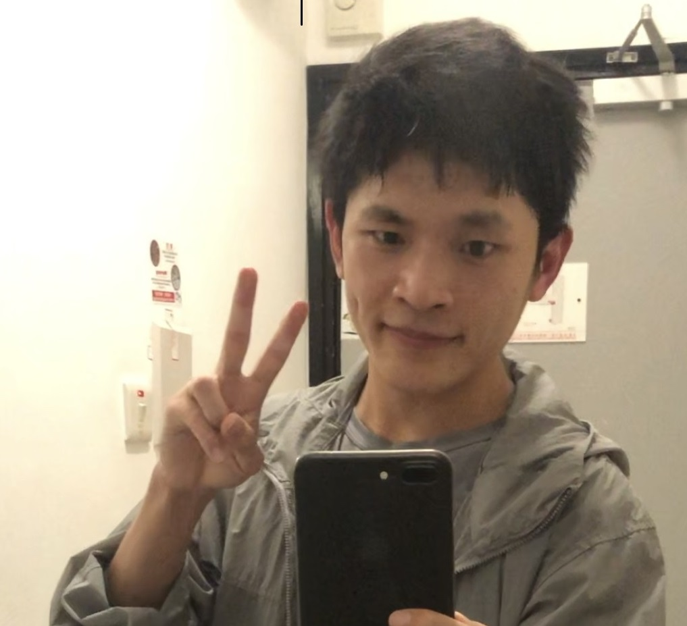

|
 |
ZHANG Qinggang (张庆刚)I am now a second-year PhD student in DEEP Lab at The Hong Kong Polytechnic University, Department of Computing, supervised by Prof. HUANG Xiao. My research interests include Knowledge Graphs, Graph Neural Networks, Network Anomaly Detection, Recommender Systems, etc. [Google Scholar] [GitHub][Email] |
Integrating Entity Attributes for Error-Aware Knowledge Graph Embedding.
Qinggang Zhang, Junnan Dong, Qiaoyu Tan, Xiao Huang*
IEEE Transactions on Knowledge and Data Engineering (TKDE under 2nd-round review).
Error Detection on Knowledge Graphs with Triple Embedding.
Yezi Liu, Qinggang Zhang, Mengnan Du, Xiao Huang, Xia Hu*
ACM International Conference on Web Search and Data Mining (Workshop in WSDM 2023).
Hierarchy-Aware Multi-Hop Question Answering over Knowledge Graphs.
Junnan Dong†, Qinggang Zhang†, Xiao Huang*, Keyu Duan, Qiaoyu Tan, Zhimeng Jiang
The Web Conference (WWW 2023).
Active Ensemble Learning for Knowledge Graph Error Detection.
Junnan Dong, Qinggang Zhang, Xiao Huang*, Qiaoyu Tan, Daochen Zha, Zihao Zhao
ACM International Conference on Web Search and Data Mining (WSDM 2023).
Contrastive Knowledge Graph Error Detection. (Slides, Code)
Qinggang Zhang, Junnan Dong, Keyu Duan, Xiao Huang*, Yezi Liu, Linchuan Xu.
ACM International Conference on Information and Knowledge Management (CIKM 2022).
Consistent and Non-Redundant Knowledge Graph Construction for Interactive Education.
Wentao Li, Huachi Zhou, Junnan Dong, Qinggang Zhang, Qing Li, George Baciu, Jiannong Cao and Xiao Huang
International Conference on Web-Based Learning (ICWL 2022).
KCUBE: A Knowledge Graph University Curriculum Framework for Student Advising and Career Planning. Qing Li,
George Baciu, Jiannong Cao, Xiao Huang, Richard Chen Li, Peter HF Ng, Junnan Dong, Qinggang Zhang, Zackary Sin, Yaowei Wang
International Conference on Blended Learning (ICBL 2022).
National scholarships in every year of undergraduate except 2016
First-class scholarships in every year of undergraduate
Outstanding graduate award (undergraduate in NWPU)
The CCF Outstanding Undergraduate Award in 2016
Vector Scholarship in Artificial Intelligence in 2020-2021
SIGIR Student Travel Grant in 2022
Champion in “WRC2016” international Underwater Robot competition
Champion at 21th FIRA RoboWorld Cup 2016,Beijing,China
Champion in 2016 China Robot Competition
Champion in 2017 China Robot Competition
Champion in the 2017 international Underwater Robot competition
Honorable Mention in the 2017 Interdisciplinary Contest in Modeling